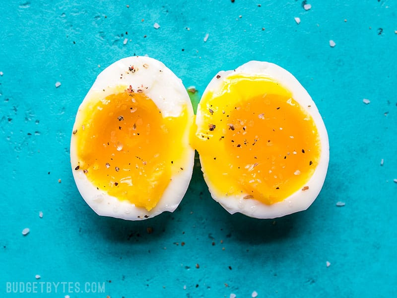

Soft Boiled Egg

Soft Boiled eggs containing runny yet cooked egg yolk in the center.
Ingredients:
- Egg
- Water
- Ice
- Salt and pepper (optional)
Instructions:
- Fill a pot with water and bring it up to a boil.
- Place your eggs into the pot of water and leave it for 6 minutes.
- After 6 minutes, remove the eggs from the pot and place into ice water
to stop the eggs from cooking.
Home